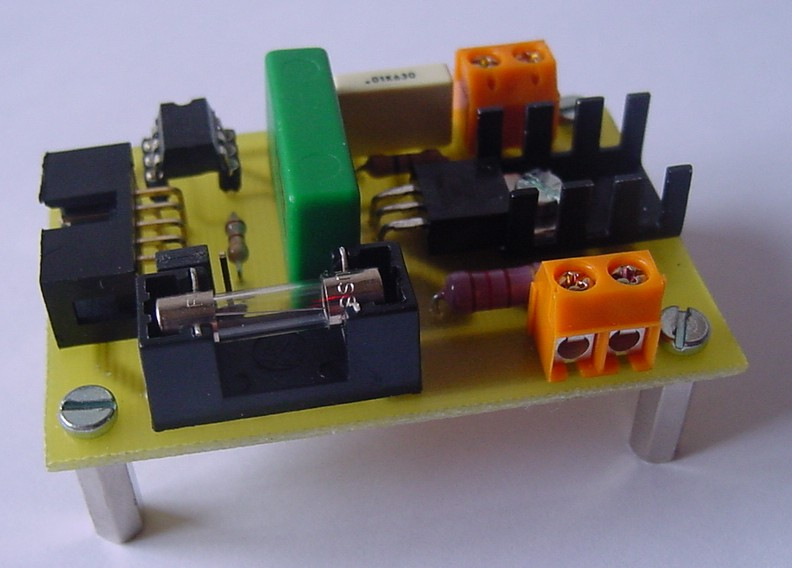
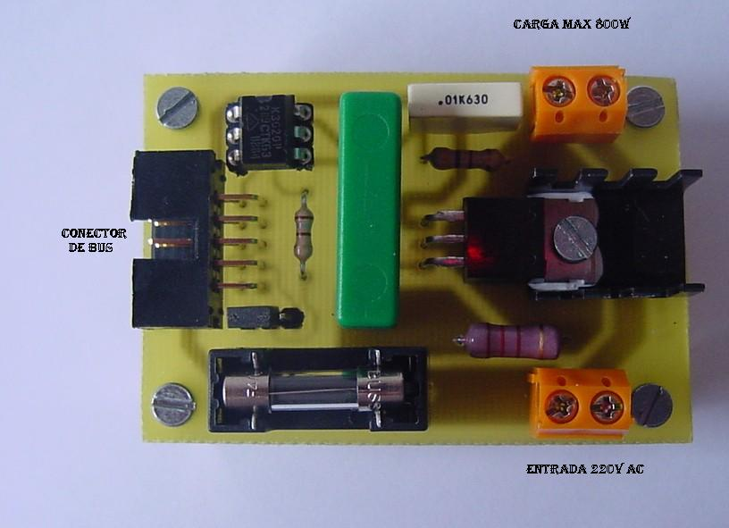
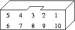
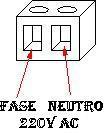
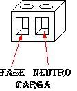

|
Tarjeta Opto-triac 1.0 |
|
 |
Tarjeta de prueba con un optoacoplador para controlar un triac, conector para cable de tipo bus y clemas para la conexión de la carga a manejar y la entrada de 220 voltios. Se conecta directamente a los puertos de la tarjeta Skypic. Se ha desarrollado para poder manejar cargas en corriente alterna no inductivas.
Triac optoacoplado de 600V y 4A MAX.
Dimensiones: 65 x 45 mm
Placa a simple cara
Conexión a través de un cable plano de tipo bus de 10 hilos, clemas para carga y 220v AC.
Hardware Libre
Plataforma de desarrollo: máquina con Windows 2000
Diseñada con Eagle v4.09r2
Los motivos principales por lo que he diseñado esta placa son:
Aprender el funcionamiento de los triacs para manejar aparatos conectados a la red eléctrica, como por ejemplo una lámpara.
Inicio de mi pequeño proyecto para automatizar mi casa y poder manejarlo desde internet.
Una posible aplicación es conectándola al puerto B de la SkyPic poder encender y apagar un dispositivo conectado a la red electrica, con esta placa unicamente podremos manejar aparatos que no sean inductivos como por ejemplo las bombillas siempre que estas no sean de ahorro de energia.
En vez de encender o apagar unicamente una bombilla podríamos variar la intensidad ajustando el momento de disparo del triac.
En general activar y desactivar casi cualquier electrodoméstico que tengamos en casa. Si nos creamos una red de controladores de este tipo o del tipo freerele conectados a nuestra SkyPic y esta a su vez a un ordenador, podríamos crearnos un sistema de domótica para controlar todos los electrodomésticos desde nuestro PC. Para mi esta es una de las aplicaciones mejores y más divertidas que podemos dar a esta pequeña pero no menos potente placa.
La Opto-triac dispone de un conector acodado de 10 pines para su control desde la SkyPic y un par de clemas para manejar la carga y la entrada de 220v AC. En la siguientes tablas y figuras se muestran la asignación de los pines.
|
 |
| Disposición conectores en Opto-triac |
|
 |
| Clema entrada 220v AC | Clema control carga |
 |  |
|
Tarjeta Opto-triac |
|
Esquemático en formato PDF | |
|
PCB. Cara del cobre. En formato PDF | |
|
Serigrafías. Cara de los componetes. Formato PDF | |
|
Planos de opto-triac para Eagle |
La tarjeta Opto-triac esta publicada bajo la licencia Creative Commons en la versión Attribution and Share Alike. Es decir se permite copiar, modificar y distribuir este material siempre que se reconozca al autor y se mantenga la misma licencia.
06/Febrero/2006: Publicada primera versión de esta página